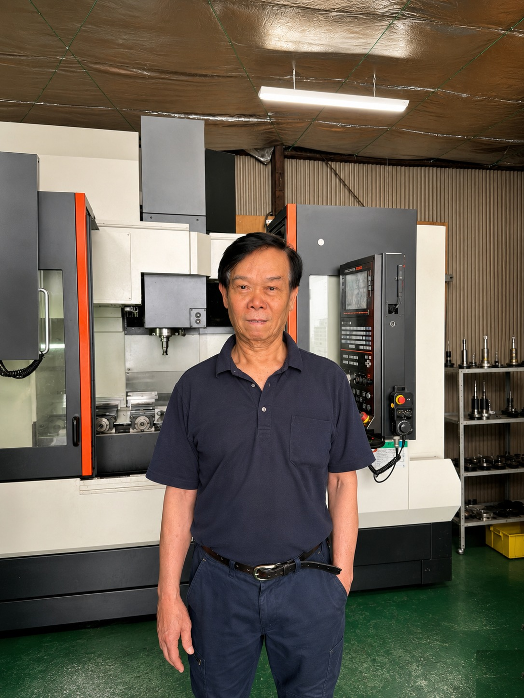

PRECISION
SINCE
SINCE
南越
NANETSU SEISAKUSHO / OSAKA
確かな技術力と、誠実なものづくり。
それが私たちの誇りです。
南越製作所は、機械加工・マシニングセンター・NC旋盤加工を中心に、多品種小ロットから量産まで、幅広いお客様のニーズにお応えしてまいりました。
東大阪という、日本を代表するものづくりの街で培われた技術は、職人の手から手へと受け継がれ、いまもなお進化を続けています。一品一品に込められた「真心」と「精度」、それが南越製作所のものづくりです。
高精度加工
ミクロン単位の精密加工に対応
柔軟な対応
試作品から量産までフレキシブルに
品質保証
全工程での厳格な品質管理
短納期対応
お急ぎの案件もお気軽にご相談

REPRESENTATIVE DIRECTOR
デイン バン ファンDINH VAN PHAN
工場内の様子 / FACTORY FLOOR